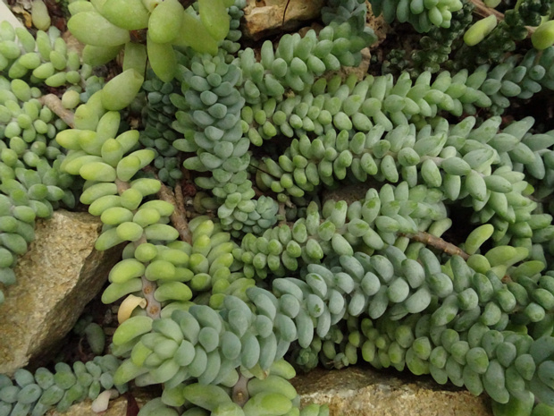

Толстянковые - Crassulaceae 4/11/09—7/11/21

Аихризон Болля - Aichryson bollei
4 images

Аэониум крученый - Aeonium tortuosum
3 images

Бородник шароносный - Jovibarba globifera
2 images

Вилладия Бэйтса - Villadia batesii
5 images

Граптоверия x 'Титубанс' - Graptoveria x 'Titubans'
4 images

Граптопеталум парагвайский - Graptopetalum paraguayense
5 images

Каланхое ньиканское - Kalanchoe nyikae
13 images

Каланхоэ бехарское - Kalanchoe beharensis
4 images

Каланхоэ Дегремона - Kalanchoe daigremontiana
4 images

Каланхоэ Федченко - Bryophyllum fedtschenkoi
4 images

Молодило кантаберийское - Sempervivum cantabricum
8 images

Молодило кровельное - Sempervivum tectorum
9 images

Молодило паутинистое - Sempervivum arachnoideum
12 images

Монантес амидрский - Monanthes amydros
2 images

Монантес минимальный - Monanthes minima
10 images

Очиток 'Джейд Туффет' - Sedum 'Jade Tuffet'
3 images

Очиток x 'Осенняя радость' - Sedum x 'Herbstfreude'
13 images

Очиток Адольфа - Sedum adolphii
7 images

Очиток белый - Sedum album
8 images

Очиток большой - Sedum maximum
14 images
Очиток древовидный - Sedum dendroideum praealtum
1 image
Очиток едкий - Sedum acre
7 images
Очиток живучий - Sedum aizoon
8 images
Очиток камчатский - Sedum kamtschaticum
5 images
Очиток ложный 'Белый' - Sedum spurium 'Album'
2 images
Очиток ложный 'Триколор' - Sedum spurium 'Tricolor'
4 images
Очиток ложный - Sedum spurium
4 images
Очиток Моргана 'Буррито' - Sedum morganianum 'Burrito'
2 images
Очиток Моргана - Sedum morganianum
1 image
Очиток Нуссбаумериана - Sedum nussbaumerianum
2 images
Очиток Палмера - Sedum palmeri
2 images
Очиток побегоносный - Sedum stoloniferum
10 images
Очиток пурпурный 'Багровый император' - Sedum telephium 'Purple emperror'
2 images
Очиток Сталя - Sedum stahlii
4 images
Очиток стелющийся - Sedum humifusum
4 images
Очиток тополелистный - Sedum populifolium
3 images
Очиток Трелиза - Sedum treleasei
3 images
Очиток Форстера - Sedum forsterianum
2 images
Пахифитум Фиткау - Pachyphytum fittkaui
5 images
Пачиверия x 'Пульчелла' - Pachyveria x 'Pulchella'
6 images
Пятнистолепестник парагвайский - Graptopetalum paraguayense
6 images
Родиола розовая - Rhodiola rosea
18 images
Толстянка древовидная - Crassula arborescens
1 image
Толстянка ложноплауновидная - Crassula pseudolycopodioides
4 images
Толстянка мшистая - Crassula muscosa f. variegata
5 images
Толстянка портулаковая - Сrassula portulacea
12 images
Толстянка почвопокровная - Сrassula expansa
2 images
Толстянка промежуточная - Crassula intermedia
11 images
Толстянка пронзённолистная - Crassula perfoliata
4 images



Толстянковые - Crassulaceae